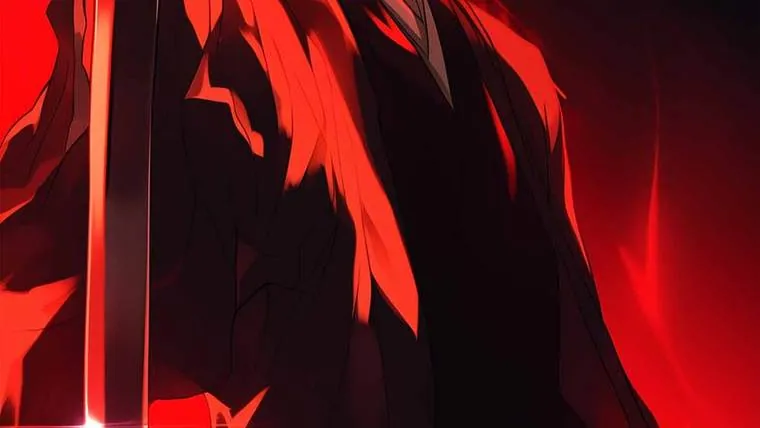
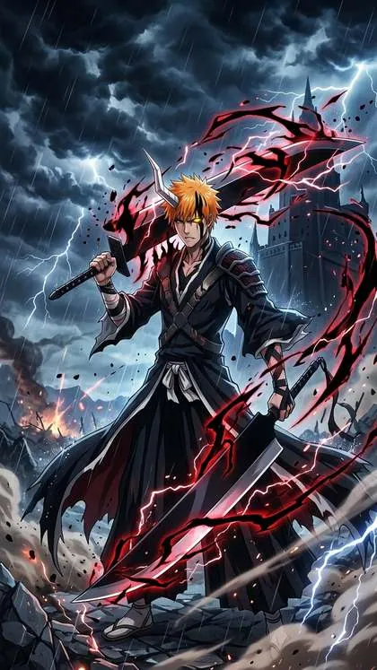
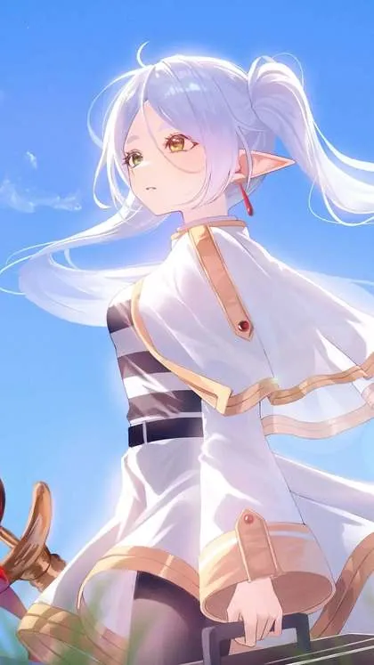
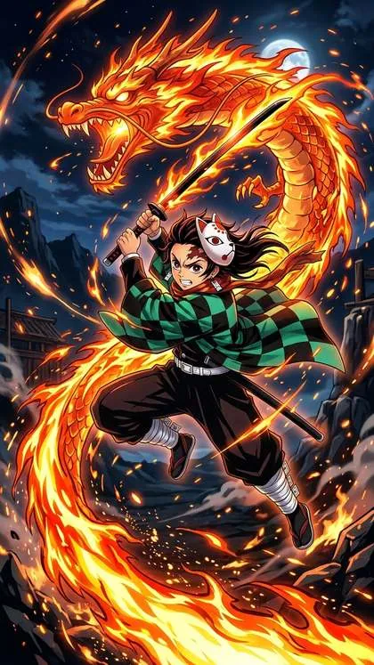

Fall 2026 Anime: The Complete Watch List and Release Dates

Last updated: 8 October 2026
The Fall 2026 anime season is airing now, and it arrived with an unusually crowded October. Fourteen anime are releasing this month alone, spread from the first week to the last. Behind that volume, the season has a clear shape: a handful of very large shows at the top, a deep supporting slate underneath them, and a film that has already reset the record books.
If you only have time for a few titles, the season is built around three anchors — JoJo's Bizarre Adventure: Steel Ball Run, the final cour of Bleach: Thousand-Year Blood War, and The Apothecary Diaries Season 3. Everything else is competing for the hours in between. What follows is what is out, when it lands, and how to keep the list manageable.
What is airing right now
October 2026 is the busiest month of the season. The month opened on 2 October with The Apothecary Diaries Season 3, and continued the next day with Black Clover Season 2. Mid-month brings Firefly Wedding on 9 October, Dragon Ball Super: Beerus on 11 October and Rascal Does Not Dream of a Dear Friend on 16 October. The back half is heavier still: Cyberpunk: Edgerunners 2 drops all 10 episodes on 20 October, the Made in Abyss film Mezameru Shinpi opens in Japan on 23 October, and the Bleach finale lands on 26 October.
Alongside those, Ranma 1/2 remake Season 3, Blue Box Season 2, Tokyo Revengers: War of the Three Titans, Reincarnated as a Sword Season 2 and Magic Knight Rayearth (2026) are all also releasing in October 2026. Steel Ball Run is running weekly on Netflix throughout the season.
If you are still catching up, the Summer 2026 season has only just finished, and it ended with a clear winner. Mushoku Tensei: Jobless Reincarnation Season 3 was the season's best, sitting at 8.83 on MyAnimeList, and it took the grand prize in Bushiroad's data-based Summer 2026 anime awards. Re:Zero Season 4 and Ghost in the Shell (Science SARU) also ranked high. Those are worth clearing first.

October 2026 release dates at a glance
Dates below are the confirmed October 2026 releases. Where a specific day has not been stated, the entry is listed simply as October 2026.
| Title | Release date | Notes |
|---|---|---|
| The Apothecary Diaries Season 3 | 2 October 2026 | First major title of the month |
| Black Clover Season 2 | 3 October 2026 | Returning series |
| Firefly Wedding | 9 October 2026 | New release |
| Dragon Ball Super: Beerus | 11 October 2026 | New release |
| Rascal Does Not Dream of a Dear Friend | 16 October 2026 | New release |
| Cyberpunk: Edgerunners 2 | 20 October 2026 | All 10 episodes at once |
| Made in Abyss film (Mezameru Shinpi) | 23 October 2026 | Opens in Japan |
| Bleach: Thousand-Year Blood War – The Calamity | 26 October 2026 | Finale, after a one-week delay (VIZ) |
| Ranma 1/2 remake Season 3 | October 2026 | Date not stated |
| Blue Box Season 2 | October 2026 | Date not stated |
| Tokyo Revengers: War of the Three Titans | October 2026 | Date not stated |
| Reincarnated as a Sword Season 2 | October 2026 | Date not stated |
| Magic Knight Rayearth (2026) | October 2026 | Date not stated |
| JoJo's Bizarre Adventure: Steel Ball Run | Airing weekly | Running on Netflix |
That accounts for the full count of 14 anime releasing in October 2026.
JoJo's Bizarre Adventure: Steel Ball Run
The headline title of the season is Steel Ball Run. It is airing weekly on Netflix, holds a 9.1 on MyAnimeList, and leads the season's anticipation lists. The weekly schedule means the conversation builds slowly rather than arriving in a single burst, which suits a story this long.
Bleach: Thousand-Year Blood War – The Calamity
The other event of the season is an ending. Bleach: Thousand-Year Blood War – The Calamity is the final cour, closing out Ichigo's story after two decades. Its finale was pushed to 26 October after a one-week delay, per VIZ.
The run has been a genuine phenomenon. The cour set an all-time record in Anime Corner's weekly community poll, taking 25.75% of the vote in the week of 21–28 August — the highest share any anime has ever recorded there. For a series finishing a story that began in the early 2000s, that is a remarkable send-off.
The Apothecary Diaries Season 3
Released on 2 October 2026, The Apothecary Diaries Season 3 was the first major title out of the gate. It gives the season a calm, character-driven anchor early in the month, before the heavier action and spectacle arrive in the second half.
It is not the only returning show worth your time. Black Clover Season 2 arrived on 3 October, and Cyberpunk: Edgerunners 2 follows with all 10 episodes on 20 October. Between them, the season leans heavily on continuing series.

The season's big screen story
The biggest anime story of the year is still a film. Demon Slayer: Infinity Castle became the highest-grossing anime film of all time, finishing its run at roughly US$802.6 million worldwide. That number reframes what a theatrical anime release can do, and it hangs over this season as a benchmark.
On the new-release side, the Made in Abyss film Mezameru Shinpi opens in Japan on 23 October 2026. International viewers should treat any wider release as expected rather than confirmed.
How to plan your watchlist
Fourteen titles in a single month is more than most people can follow, and trying to watch all of them usually means enjoying none of them. A few habits make the season easier to manage:
- Start with the three anchors. Steel Ball Run, the Bleach finale and The Apothecary Diaries Season 3 are the titles the season is built around. Lock in those three first.
- Treat weekly shows as weekly. Steel Ball Run and Bleach release on a schedule. Watching them week to week keeps the load steady instead of creating a pile-up.
- Batch the binge drops. Cyberpunk: Edgerunners 2 puts all 10 episodes out on 20 October, so set aside a weekend rather than fitting it around a weekly slot.
- Leave room for returning shows. Black Clover Season 2, Ranma 1/2 remake Season 3, Blue Box Season 2 and Reincarnated as a Sword Season 2 all reward viewers who already know the earlier seasons.
- Clear last season first. Mushoku Tensei Season 3 was the standout of Summer 2026 at 8.83 on MyAnimeList. If you missed it, it is worth finishing before the Fall list grows any longer.

Frequently asked questions
When does the Fall 2026 anime season start?
The season is airing now — it began in October 2026. Fourteen anime are releasing in October 2026, with the first titles arriving on 2 October.
What is the biggest anime of Fall 2026?
Two titles lead the season. JoJo's Bizarre Adventure: Steel Ball Run is the highest-rated new entry, at 9.1 on MyAnimeList, and tops anticipation lists. Bleach: Thousand-Year Blood War – The Calamity is the season's biggest event, closing out Ichigo's story after two decades.
When does the Bleach finale air?
The final cour's finale is set for 26 October 2026, after a one-week delay, per VIZ. It closes out the Thousand-Year Blood War arc and Ichigo's story.
Which films are out this season?
The Made in Abyss film Mezameru Shinpi opens in Japan on 23 October 2026. Looking at the wider year, Demon Slayer: Infinity Castle finished as the highest-grossing anime film of all time, at roughly US$802.6 million worldwide.
Related reading
If you like fantasy anime with real political weight, we reviewed As a Reincarnated Aristocrat, I'll Use My Appraisal Skill to Rise in the World season by season: Season 1, Season 2, Season 3 (airing now), or start with the complete S1-S3 guide.